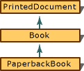
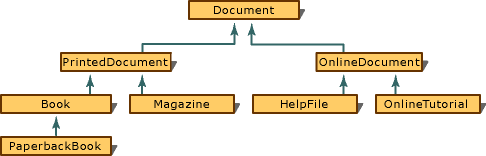
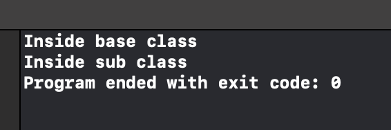
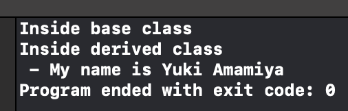
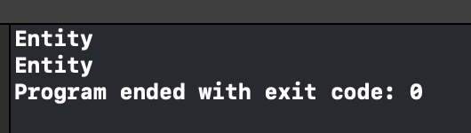
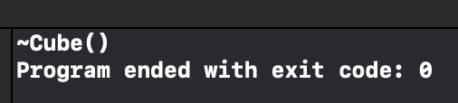
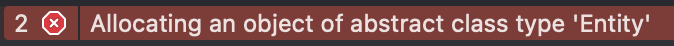

Inheritance
In nearly all object-oriented languages (including C++), classes can be extended to build other classes. We call the class being extended the base class and the class inheriting the functionality the derived class.
- base class
- derived class
Example 1 : Single Inheritance
Hint: Do we really need multiple inheritance?
https://docs.microsoft.com/en-us/cpp/cpp/single-inheritance
The PrintedDocument -> Book -> Paperbackbook , and the class diagram (arrow shows the parent).

// deriv_SingleInheritance.cpp
// compile with: /LD
class PrintedDocument {};
// Book is derived from PrintedDocument.
class Book : public PrintedDocument {};
// PaperbackBook is derived from Book.
class PaperbackBook : public Book {};
A parent can have multiple children. It looks like

But a child can only have single parent (single inheritance).
Example 2 : Order of Constructor/ Destructor Call in C++
https://www.geeksforgeeks.org/order-constructor-destructor-call-c/
In C++, both the parent and chlid classes are initialized.
// base class
class Parent{
public:
Parent(){
std::cout << "Inside base class" << std::endl;
}
};
// derived class
class Child : public Parent{
public:
Child(){
std::cout << "Inside sub class" << std::endl;
}
};
int main(int argc, const char * argv[]) {
Child obj;
return 0;
}
The expected results are

Example 3 : Public Access Specifier in Inheritance
If the base class Line.h is
class Line {
public:
Line(); // default constructor
Line(double length);
double getLength() const;
private:
double length_;
};
The derivated clas Square.h is
#include "Line.h"
class Square : public Line {
public:
double getArea() const;
// all public members of `Line`! (but think carefully to constructors).
// If you don't explcitly declare the constructor,
// the compiler will use the default constructor in Line (but because `Line(double length)` is not a default constructor, it would not appear here).
private:
// Nothing!
};
In the above code, Square is derived from the base class Line.
For a derived class,
- Public members of the base class
- Avaliable to both Base and Derived classes.
- Private Members of the
- Avaliable to Base class not Derived class.
- Why the inheritance produces an object but using two classes?
- Look at Example 2 : Order of Constructor/ Destructor Call in C++
Example 4 : Which Private Member ?
假如 Base 和 Derived Classes 都有相同的 private member, compiler 只会初始化 Base Class 的 private member.
// base class
class Parent{
public:
// default constructor
Parent(){
std::cout << "Inside base class" << std::endl;
}
void printName(){
std::cout << " - My name is " << name_ << std::endl;
}
private:
std::string name_ = "Yuki Amamiya";
};
// derived class
class Child : public Parent{
Child(){
std::cout << "Inside derived class" << std::endl;
}
private:
std::string name_ = "Hitomi Amamiya";
};
int main(int argc, const char * argv[]) {
Child obj;
obj.printName();
return 0;
}

可见只有 Parent 的 private member 被初始化了。
Polymorphism
Object-Orientated Programming (OOP) concept that a single object may take on the type of any of its base types.
一个对象的行为完全可以像它的 Base type.
Polymorphism 的好处？
Why Polymorphism? Suppose you’re managing an animal shelter that adopts cats, dogs and pigs:
The animalShelter.cpp without inheritance and polymorphism.
Cat & AnimalShelter::adopt() { ... }
Dog & AnimalShelter::adopt() { ... }
Pig & AnimalShelter::adopt() { ... }
...
With Polymorphism, say
A
Catmay polymorph itself to aAnimal.
You then only need to write a very simple function animalShelter.cpp.
Animal & AnimalShelter::adopt() { ... }
Virtual
Virtual 的使用要遵循一下规则。 原因见 https://randoruf.github.io/2020/12/21/cpp-virtual-function.html
- 规则1 ： private function 不能使用 virtual 。防止 private function 的指针被保存到 V-table 中（这是危险的行为）
The virtual keyword allows us to override the behavior of a class by its derived type. It is very useful when it comes to Polymorphism.
Watch https://www.youtube.com/watch?v=oIV2KchSyGQ.
The following case is incorrect if you want to apply the concept of polymorphism...
class Entity{
public:
std::string GetName(){
return "Entity";
}
};
class Player : public Entity{
private:
std::string name_;
public:
Player(const std::string &name){
name_ = name;
}
std::string GetName(){
return name_;
}
};
If you want to apply the concept of polymorphism...
/*
This function should work for objects generated by Entity or Player.
*/
void printName(Entity* entity){
std::cout << entity->GetName() << std::endl;
}
int main(int argc, const char * argv[]) {
// print "Entity"?
Entity *e = new Entity();
printName(e);
// print "Yuki sama"?
Player *p = new Player("Yuki sama");
printName(p);
return 0;
}
However, the actual resutl!

Hint: We have two implementations of the method GetName()
We have two implementations of the method GetName(). Which to choose?
Well, C++ will simply call the method belongs to that type.
这就非常类似于我们直接声明了两个独立的 class, 本身跟 Inheritance 没有太多关系。 只会调用 当前type 里面的 member-function. 例如此处只调用了 Entity 的方法。
Exampel 0 : Virtual Function
How to fix it? - Virtual Function!
Vritual function has a virtual table, so it is called virtual function.
记得要同时加上 virtual 和 override 。
class Entity{
public:
virtual std::string GetName() const{
return "Entity";
}
};
class Player : public Entity{
private:
std::string name_;
public:
Player(const std::string &name){
name_ = name;
}
std::string GetName() const override {
return name_;
}
};
Example 1： Polymorphism and Pointer (virtual function)
The main function looks like
/*
This function should work for objects generated by Entity or Player.
*/
void printName(Entity* entity){
std::cout << entity->GetName() << std::endl;
}
int main(int argc, const char * argv[]) {
// print "Entity"?
Entity *e = new Entity();
printName(e);
// print "Yuki sama"?
Player *p = new Player("Yuki sama");
printName(p);
return 0;
}
Example 2 : Polymorphism and Reference (virtual function)
The main function looks like
void printName(const Entity &entity){
std::cout << entity.GetName() << std::endl;
}
int main(int argc, const char * argv[]) {
Player p = Player("Yuki sama");
Entity &e = p;
printName(e); // printName only allow Entity class.
return 0;
}
Example 3 : Destructor
Hint: Destructor with virtual
In any base class, the destructor must be virtual.
class Cube {
public:
~Cube(){
std::cout << "~Cube()" << std::endl;
}
};
class RubikCube : public Cube {
public:
~RubikCube(){
std::cout << "~RubikCube" << std::endl;
}
};
int main(int argc, const char * argv[]) {
Cube *ptr = new RubikCube();
delete ptr;
return 0;
}

How to fix it?
Example 4 : Multi-layer Inheritence
The V-table will store the lowest function implementation.
The following Dog.speak() implementation is useless.
class Animal{
public:
virtual std::string speak() const = 0;
};
class Dog : public Animal{
public:
std::string speak() const override { return "Dog"; }
};
class Husky : public Dog{
std::string speak() const override { return "Dog-Husky"; }
};
class GoldenRetriever : public Dog{
std::string speak() const override { return "Dog-GoldenRetriever"; }
};
int main(int argc, const char * argv[]) {
GoldenRetriever g = GoldenRetriever();
Animal &a = g;
std::cout << a.speak() << std::endl;
return 0;
}
Abstract Class
The abstract class is implenmented by pure virtual methods.
- Requirement
- contain at least one pure virtual function
- Syntax
- without implementation (is different from Java)
- the function pointer is equal to
0
- As a result
- Can NOT instantiate the base class.

Example 1 : Pure Virtual Methods
A pure virtual method does not have a definition and makes the class and abstract class.
A pure virtual function is declared by assigning 0 in declaration.
class Entity{
public:
virtual std::string GetName() const = 0;
};
Now it is less confusing compared to Example 0.
Because you need to implement all methods in the derived types.
(The base type is an abstract class has only names of functions...)